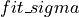
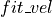
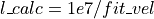

Parameter Calculations
In this file we have the functions used to calculate the velocity, the velocity dispersion (broadening), and the flux as well as their uncertainties.
Fit Parameter Calculations
In this file we have the functions used to calculate the velocity, the velocity dispersion (broadening), and the flux as well as their uncertainties.
- LUCI.LuciFitParameters.calculate_broad(ind, fit_sol, axis_step)
Calculate velocity dispersion
\sigma = (SPEED_OF_LIGHT*fit\_\sigma )/(fit\_vel)
where  is the gaussian broadening parameter found in the fit, and  is the shifted position of the line in units of cm-1.
Note that we do NOT multiply by the axis_step. This kind of correction should have been done already in ORB!
- Parameters:
ind – Index of line in lines
fit_sol – Solution from fitting algorithm
axis_step – Step due to correction factor (see LuciFit.calculate_correction)
- Returns:
Velocity Dispersion of the Halpha line in units of km/s
- LUCI.LuciFitParameters.calculate_broad_err(ind, fit_sol, axis_step, uncertainties)
Calculate velocity dispersion error We simply take the difference between the velocity dispersions with and without the uncertainty.
- Parameters:
ind – Index of line in lines
fit_sol – Solution from fitting algorithm
axis_step – Step due to correction factor (see LuciFit.calculate_correction)
uncertaintes – Uncertainties from fitting algorithm
- Returns:
Velocity Dispersion of the Halpha line in units of km/s
- LUCI.LuciFitParameters.calculate_flux(line_amp, line_sigma, model_type, sinc_width)
Calculate flux value given fit of line See HowLuciWorks for calculations
- Parameters:
line_amp – Amplitude of the line (un-normalized)
line_sigma – Sigma of the line fit
model_type – Fitting function (i.e. ‘gaussian’, ‘sinc’, or ‘sincgauss’)
sinc_width – Fixed with of the sinc function
- Returns:
Flux of the provided line in units of erg/s/cm-2
- LUCI.LuciFitParameters.calculate_flux_err(ind, fit_sol, uncertainties, model_type, sinc_width)
Calculate flux error
We simply take the difference between the fluxes with and without the uncertainty.
- Parameters:
ind – Index of line in lines
fit_sol – Solution from fitting algorithm
uncertaintes – Uncertainties from fitting algoritm
model_type – Fitting function (i.e. ‘gaussian’, ‘sinc’, or ‘sincgauss’)
sinc_width – Fixed with of the sinc function
- Returns:
Error of the provided line in units of ergs/s/cm-2
- LUCI.LuciFitParameters.calculate_vel(ind, lines, fit_sol, line_dict)
Calculate velocity.

Where  and
 is the rest wavelength of the line.
is the shifted position of the line in units of cm-1.
is the rest wavelength of the line.
is the shifted position of the line in units of cm-1.- Parameters:
ind – Index of line in lines
lines – Lines to be fit (e.x. [‘Halpha’])
fit_sol – Solution from fitting algorithm
line_dict – Dictionary of Line Names and their wavelengths in nm
- Returns:
Velocity of the Halpha line in units of km/s
- LUCI.LuciFitParameters.calculate_vel_err(ind, lines, fit_sol, line_dict, uncertainties)
Calculate velocity error
We simply take the difference between the velocities with and without the uncertainty.
- Parameters:
ind – Index of line in lines
lines – Lines to be fit (e.x. [‘Halpha’])
fit_sol – Solution from fitting algorithm
line_dict – Dictionary of Line Names and their wavelengths in nm
uncertaintes – Uncertainties from fitting algoritm
- Returns:
Velocity of the Halpha line in units of km/s